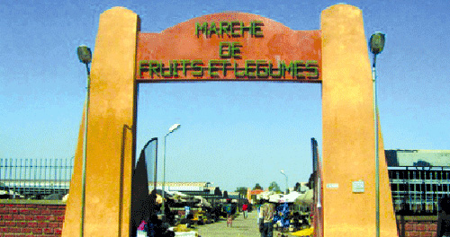
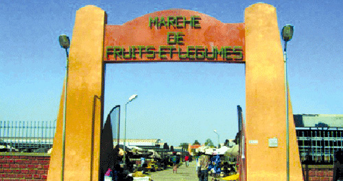

Description
Le Vieux Marché de Bobo-Dioulasso, également appelé le Grand Marché ou le marché de Bobo, est un lieu incontournable de la ville, connu pour son ambiance animée, ses nombreuses boutiques et la diversité des produits proposés. Il est situé au cœur du triangle commercial, sur l'axe reliant la mairie à la gare. Ce marché est un des plus anciens centres commerciaux du Burkina Faso et est réputé pour ses tissus.
- Histoire:
Fondé en 1952, il est l'un des premiers centres commerciaux du Burkina Faso.
- Emplacement:
Au cœur du triangle commercial, reliant la mairie à la gare.
- Superficie: 4 hectares.
- Nombre de boutiques: 3 284.
- Spécialités: Tissus, artisanat, bijoux, épices, etc.
- Ambiance: Coloré, agréable, avec une atmosphère unique.
🏛️ Architecture
L'architecture des marchés de Bobo-Dioulasso, comme dans de nombreuses villes d'Afrique de l'Ouest, se caractérise par une combinaison de structures formelles et informelles. Les marchés formels, souvent construits selon des principes de partenariats public-privé (PPP), comme celui du secteur 25, offrent des boutiques, des hangars, des espaces pour la vente de poisson et de viande, et des espaces de conservation. Les marchés informels, quant à eux, se développent spontanément et comprennent des étalages, des échoppes temporaires et des commerçants ambulants.
Importance culturelle et economique
Le Grand Marché de Bobo-Dioulasso est un lieu crucial, tant du point de vue économique que culturel, pour la région. Il est un véritable symbole de la vitalité économique et de la richesse culturelle de la ville et de la sous-région.
Centre commercial majeur: Le marché est le plus grand de la région et offre une grande variété de produits locaux, de l'artisanat traditionnel aux produits agricoles frais. Source d'emplois: Il est une source importante de revenus et d'emplois pour de nombreuses personnes, notamment dans le secteur informel. Carrefour économique: Bobo-Dioulasso, en tant que deuxième ville la plus peuplée du Burkina Faso, est un important carrefour économique et commercial, et le marché en est un pilier essentiel. Agriculture et commerce: L'agriculture, en particulier les cultures irriguées, joue un rôle important dans l'approvisionnement du marché, tandis que le commerce est une activité clé pour l'économie locale.
Lieu d'échange et de rencontre: Le marché est un lieu de rencontre pour les habitants de la ville et des environs, favorisant les échanges sociaux et culturels. Reflet de la diversité culturelle: Il reflète la richesse de la culture régionale, avec l'exposition d'objets artisanaux traditionnels et de produits locaux. Symboles culturels: Le marché peut être associé à des symboles culturels importants pour les différentes communautés de la région. Expressions culturelles: La présence de musique, de danse et d'autres formes d'expression culturelle lors de fêtes et événements au marché contribue à sa dynamique culturelle.
Galerie
.jpeg)
.jpeg)
.jpeg)
.jpeg) 


Informations pratiques
- Lieu : Bobo-Dioulasso
- Horaires : Ouvert tous les jours de 9h à 18h
- Entrée : Gratuite / Participation symbolique
- Guide local : Disponible sur place
Il est conseillé de visiter le site accompagné d’un guide local pour mieux comprendre l’histoire et les rituels associés.